| acrePrice | acres | region | tillable | crpPct | productivity |
|---|---|---|---|---|---|
| 2933 | 303 | West Central | 75 | 23 | 53 |
| 2283 | 265 | West Central | 75 | 3 | 52 |
| 2150 | 40 | South West | 90 | 20 | 72 |
| 2432 | 110 | West Central | 60 | 50 | 48 |
| 1494 | 77 | Northwest | 90 | 93 | 45 |
| 2495 | 192 | West Central | 97 | 17 | 64 |
| 4086 | 220 | West Central | 95 | 3 | 65 |
| 1400 | 78 | West Central | 56 | 13 | 43 |
| 2092 | 75 | West Central | 100 | 13 | 69 |
| 1852 | 58 | West Central | 93 | 34 | 43 |
| 1458 | 120 | Northwest | 88 | 69 | 34 |
| 2600 | 77 | West Central | 96 | 4 | 57 |
| 1051 | 97 | South West | 82 | 73 | 50 |
| 2544 | 117 | South West | 98 | 3 | 59 |
| 2013 | 75 | South Central | 96 | 5 | 42 |
Week 07. Multiple Linear Regression. Practice.
Part 1: Statistics and Econometrics. MK68-2024/25
Justus Liebig University Giessen
Institute of Agricultural Policy and Market Research
Causal interpretation of the MLR
Multiple Regression Controls for the factors that matter…
- These are only the factors that are included in the model.
All other factors that are not included in the MLR are assumed to remain constant!
- External Ceteris Paribus is assumed.
Violation of the Ceteris Paribus causes Bias.
Regression assumptions
They ensure that linear regression estimates obtained using the OLS method are unbiased and efficient.
OLS is unbiased: Assumptions 1 to 4 are satisfied
- Linearity
- Random Sampling
- No Collinearity
- No Endogeneity
OLS is unbiased and efficient or Best Linear Unbiased Estimator (BLUE)
- Homoscedasticity (No Autocorrelation)
OLS is a Classical linear model (CLM). Assumptions 1 to 6 are satisfied
- Error Terms Normality
Example 1. Hedonic Land prices model
1. Problem setting
We would like to assess the effect of the “Conservation Reserve Program” (CPR) on agricultural land prices.
Conservation Reserve Program
- is a subsidy
- obligates farms NOT TO GROW ANY CROPS on the enrolled land
- pays monetary compensation in exchange;
This is a riskless income, so it may increase the land price.
- However, if the land is productive, such set-aside measures may reduce farmland prices.
2. Regression model formulation
The hedonic price model (Palmquist 1989) is an econometric approach to quantifying monetary values of differentiated characteristics of goods or services, which are subjects of economic exchange.
The theory of the hedonic price model allows us to estimate the price as a function of all characteristics of a good. Available variables in our data (Taff and Weisberg 2007) are:
acrePrice- sale price in dollars per acre;crpPct- the percentage of the farm area enrolled in CRP;acres- the size of the farm in acres;region- a region in the state of Minnesota;
tillable- the percentage of the farm that is rated arable by the assessor;productivity- average agronomic productivity scaled from 1 to 100, with larger numbers for more productive land;
EQ: Write down a regression equation that could help answering the main research question.
\[ \begin{aligned} \operatorname{acrePrice} &= \alpha + \beta_{1}(\operatorname{crpPct}) + \beta_{2}(\operatorname{acres})\ + \\ &\quad \beta_{3}(\operatorname{region}_{\operatorname{West\ Central}}) + \beta_{4}(\operatorname{region}_{\operatorname{Central}}) + \beta_{5}(\operatorname{region}_{\operatorname{South\ West}})\ + \\ &\quad \beta_{6}(\operatorname{region}_{\operatorname{South\ Central}}) + \beta_{7}(\operatorname{region}_{\operatorname{South\ East}}) + \beta_{8}(\operatorname{tillable})\ + \\ &\quad \beta_{9}(\operatorname{productivity}) + \epsilon \end{aligned} \]
EQ: Formulate the ex-ante hypothesis about the sign and magnitude of the coefficient “______”. In 1-2 sentences, explain why (based on what theory, common sense) you make this hypothesis.
3 Exploratory data analysis
3.1 The data
3.2 Summary statistics
| N | Mean | SD | Min | Median | Max | Histogram | |
|---|---|---|---|---|---|---|---|
| acrePrice | 8787 | 3044.24 | 1553.36 | 173.00 | 2800.00 | 14379.00 | ▃▇▄▂ |
| acres | 8787 | 114.79 | 88.15 | 1.00 | 80.00 | 1365.00 | ▇▃ |
| tillable | 8787 | 88.19 | 15.82 | 5.00 | 94.00 | 100.00 | ▁▂▇ |
| crpPct | 8787 | 2.93 | 13.63 | 0.00 | 0.00 | 100.00 | ▇ |
| productivity | 8787 | 66.74 | 13.48 | 1.00 | 68.00 | 99.00 | ▁▂▃▇▇▃▁ |
| region | N | % |
|---|---|---|
| Northwest | 788 | 9.0 |
| West Central | 1747 | 19.9 |
| Central | 1058 | 12.0 |
| South West | 2438 | 27.7 |
| South Central | 1983 | 22.6 |
| South East | 773 | 8.8 |
| 8787 | 100.0 |
3.3 Regional differences
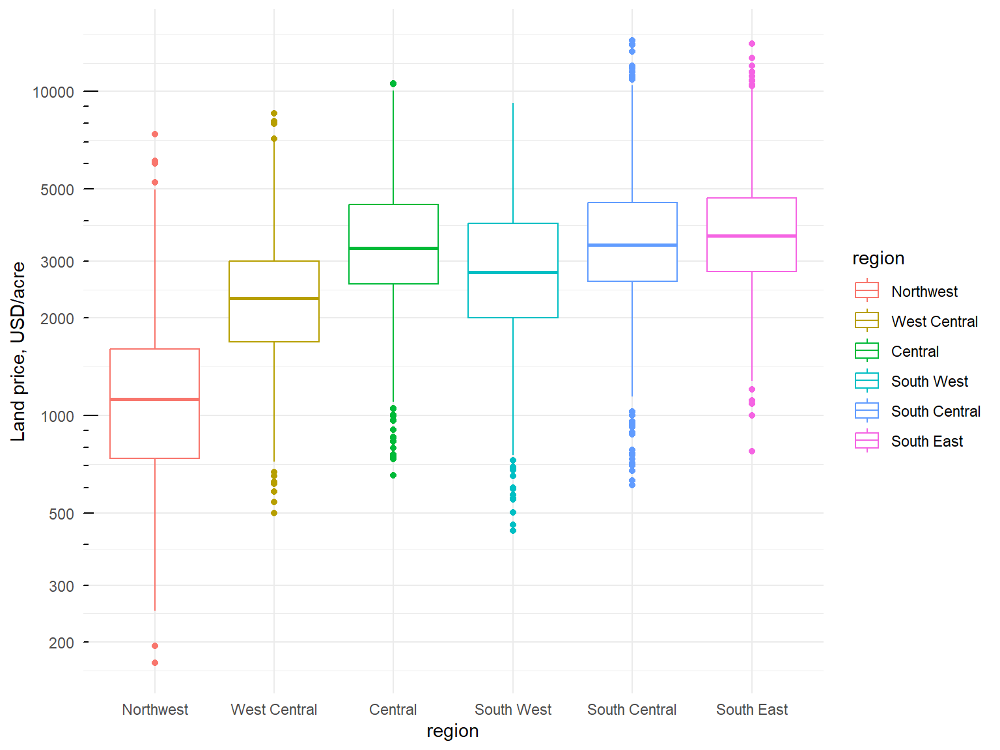
- What kind of plot is this?
- What (if any) transformation of the Y axis is used on the plot?
- What can we conclude about the land prices by region?
- EQ: What are the possible causes of price differences between the regions?
- EQ: Does the region cause land prices to be different?
3.4 Distributions
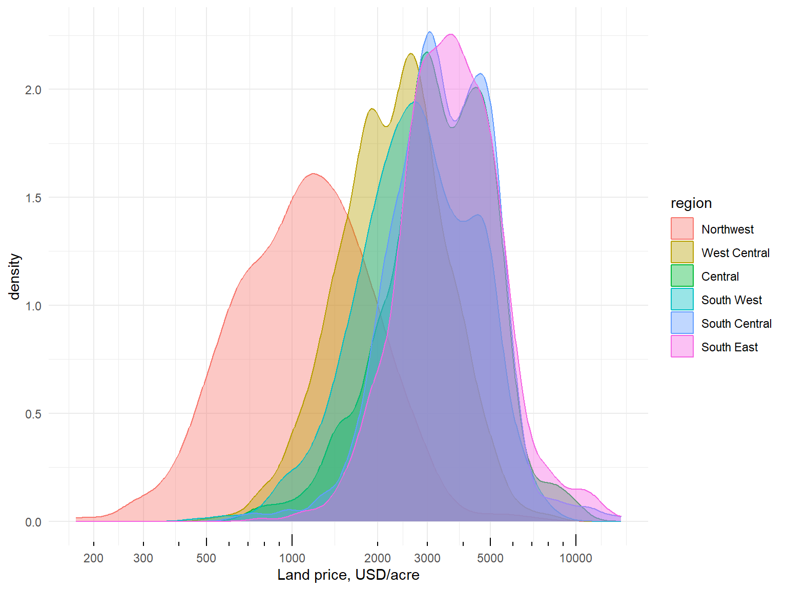
- What kind of plot is this?
- What does it show?
- What (if any) transformation of the X axis is used on the plot?
- What differences and similarities does it manifest?
3.5 Scatter plots
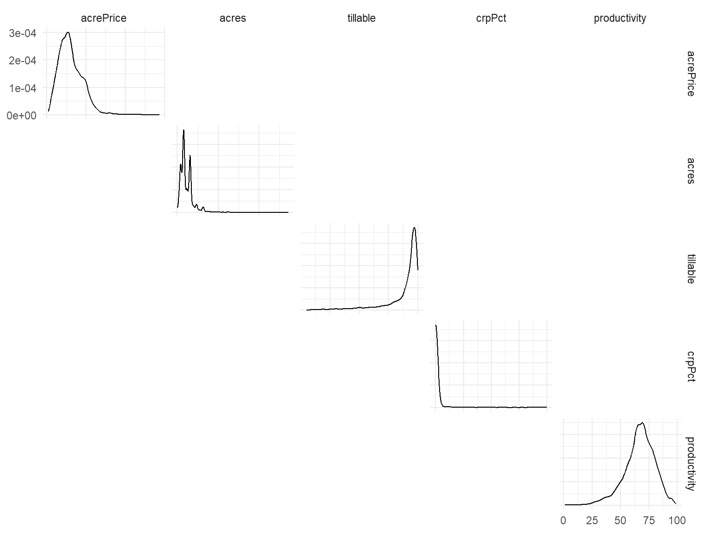
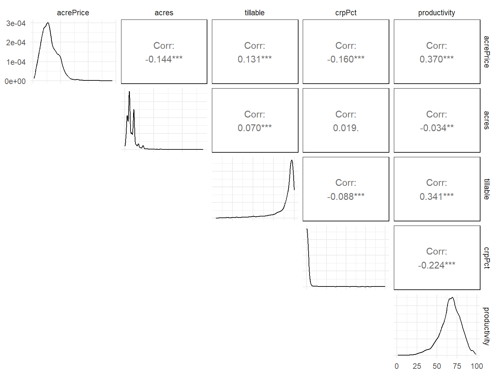
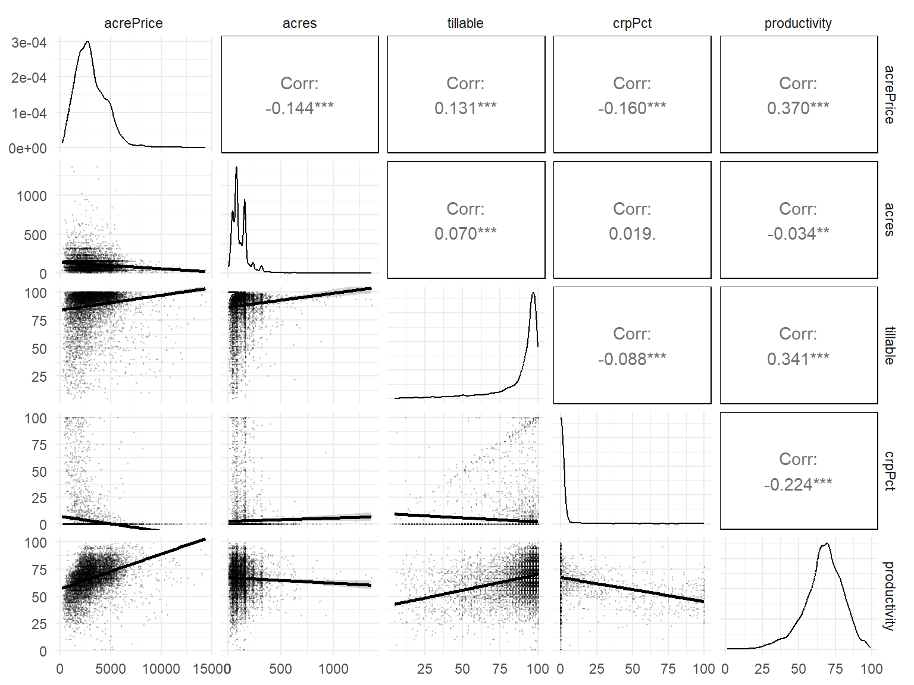
EQ: What kind of relationship exists between
acrePrices(land price per acre, USD) andacres(plot size in acres) variables? (Linear/non linear, strong/weak correlation, positive/negative)EQ: same question for any other pair of variables.
4. Estimating the regression
fit_land_0 <- lm(
acrePrice ~ crpPct + acres + region + tillable + productivity,
landprice_dta)
summary(fit_land_0)
# Coefficients:
# Estimate Std. Error t value Pr(>|t|)
# (Intercept) 80.2822 102.3493 0.784 0.4328
# crpPct -6.9429 1.0727 -6.473 1.02e-10 ***
# acres -1.2898 0.1650 -7.818 6.00e-15 ***
# regionWest Central 995.2924 58.0391 17.149 < 2e-16 ***
# regionCentral 1950.2114 64.5434 30.215 < 2e-16 ***
# regionSouth West 1291.8278 58.3426 22.142 < 2e-16 ***
# regionSouth Central 1747.5506 62.5597 27.934 < 2e-16 ***
# regionSouth East 2040.6768 72.4923 28.150 < 2e-16 ***
# tillable 2.1123 0.9691 2.180 0.0293 *
# productivity 23.6903 1.3300 17.812 < 2e-16 ***
#
# Residual standard error: 1332 on 8777 degrees of freedom
# Multiple R-squared: 0.2654, Adjusted R-squared: 0.2647
# F-statistic: 352.4 on 9 and 8777 DF, p-value: < 2.2e-166. Results interpretation
| Parameter | Coefficient | SE | t(8777) | p |
|---|---|---|---|---|
| (Intercept) | 80.28 | 102.35 | 0.78 | 0.433 |
| crpPct | -6.94 | 1.07 | -6.47 | < .001 |
| acres | -1.29 | 0.16 | -7.82 | < .001 |
| region (West Central) | 995.29 | 58.04 | 17.15 | < .001 |
| region (Central) | 1950.21 | 64.54 | 30.22 | < .001 |
| region (South West) | 1291.83 | 58.34 | 22.14 | < .001 |
| region (South Central) | 1747.55 | 62.56 | 27.93 | < .001 |
| region (South East) | 2040.68 | 72.49 | 28.15 | < .001 |
| tillable | 2.11 | 0.97 | 2.18 | 0.029 |
| productivity | 23.69 | 1.33 | 17.81 | < .001 |
Note units of measurement:
acrePrice sale price in USD per acre;
crpPct is % of all farm acres enrolled under the program (CRP);
acres size of the farm in acres;
region is the sub-regions in the state of Minnesota;
tillable is the percentage of the farm that is rated arable by the assessor;
productivity is the average agronomic productivity scaled from 1 to 100, with larger numbers for more productive land.
EQ: Write down the full interpretation of and perform a hypothesis testing on each coefficient.
5. Checking the linearity assumption
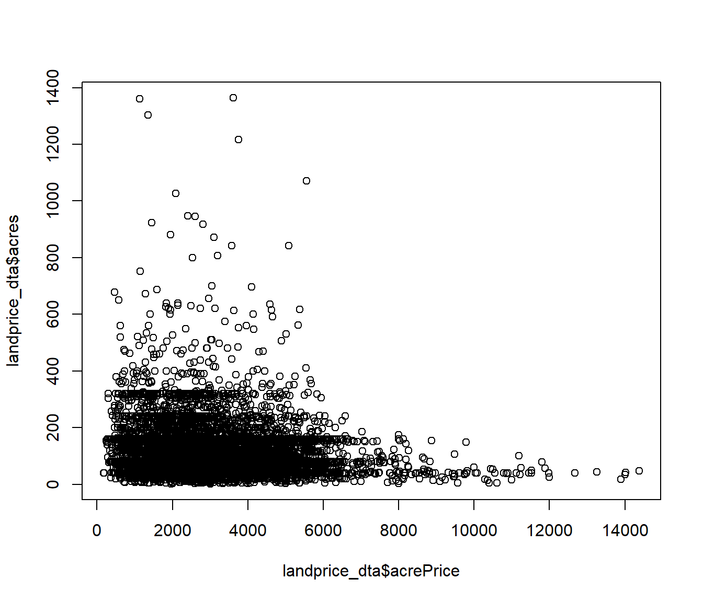
Is the relationship between acrePrice and acres linear?
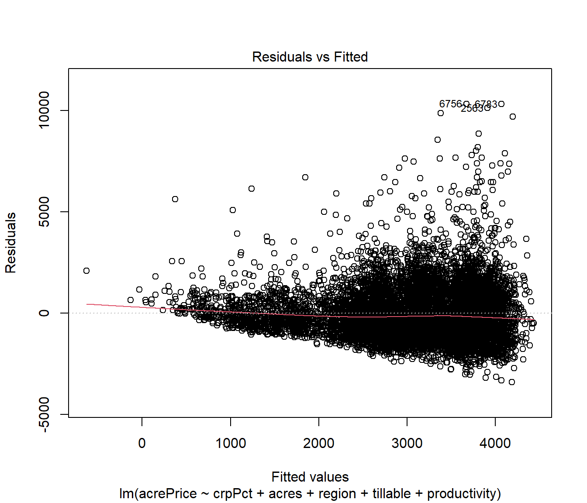
Is the linearity assumption satisfied in our regression?
4. Regression re-specification
Let us transform acrePrice and acres variables with the log transformation and estimate the regression again. The old regression is:
\[ \begin{aligned} \operatorname{acrePrice} &= \alpha + \beta_{1}(\operatorname{crpPct}) + \beta_{2}(\operatorname{acres})\ + \\ &\quad \beta_{3}(\operatorname{region}_{\operatorname{West\ Central}}) + \beta_{4}(\operatorname{region}_{\operatorname{Central}}) + \beta_{5}(\operatorname{region}_{\operatorname{South\ West}})\ + \\ &\quad \beta_{6}(\operatorname{region}_{\operatorname{South\ Central}}) + \beta_{7}(\operatorname{region}_{\operatorname{South\ East}}) + \beta_{8}(\operatorname{tillable})\ + \\ &\quad \beta_{9}(\operatorname{productivity}) + \epsilon \end{aligned} \]
Write down the new regression equation with the transformations.
\[ \begin{aligned} \operatorname{log(acrePrice)} &= \alpha + \beta_{1}(\operatorname{crpPct}) + \beta_{2}(\operatorname{\log(acres)})\ + \\ &\quad \beta_{3}(\operatorname{region}_{\operatorname{West\ Central}}) + \beta_{4}(\operatorname{region}_{\operatorname{Central}}) + \beta_{5}(\operatorname{region}_{\operatorname{South\ West}})\ + \\ &\quad \beta_{6}(\operatorname{region}_{\operatorname{South\ Central}}) + \beta_{7}(\operatorname{region}_{\operatorname{South\ East}}) + \beta_{8}(\operatorname{tillable})\ + \\ &\quad \beta_{9}(\operatorname{productivity}) + \epsilon \end{aligned} \]
4.1 Results of the re-specified regression
| log(acrePrice) | |
|---|---|
| p-values are: '+' p < 0.1, '\*' p < 0.05, '\*\*' p < 0.01, '\*\*\*' p < 0.001. Standard errors are reported in parentheses | |
| (Intercept) | 6.608 (0.042)*** |
| crpPct | -0.003 (0.000)*** |
| log(acres) | -0.069 (0.007)*** |
| regionWest Central | 0.624 (0.018)*** |
| regionCentral | 0.936 (0.021)*** |
| regionSouth West | 0.712 (0.019)*** |
| regionSouth Central | 0.849 (0.020)*** |
| regionSouth East | 0.939 (0.023)*** |
| tillable | 0.003 (0.000)*** |
| productivity | 0.009 (0.000)*** |
| Num.Obs. | 8787 |
| R2 | 0.408 |
| R2 Adj. | 0.408 |
5. Re-checking Linearity
Before:
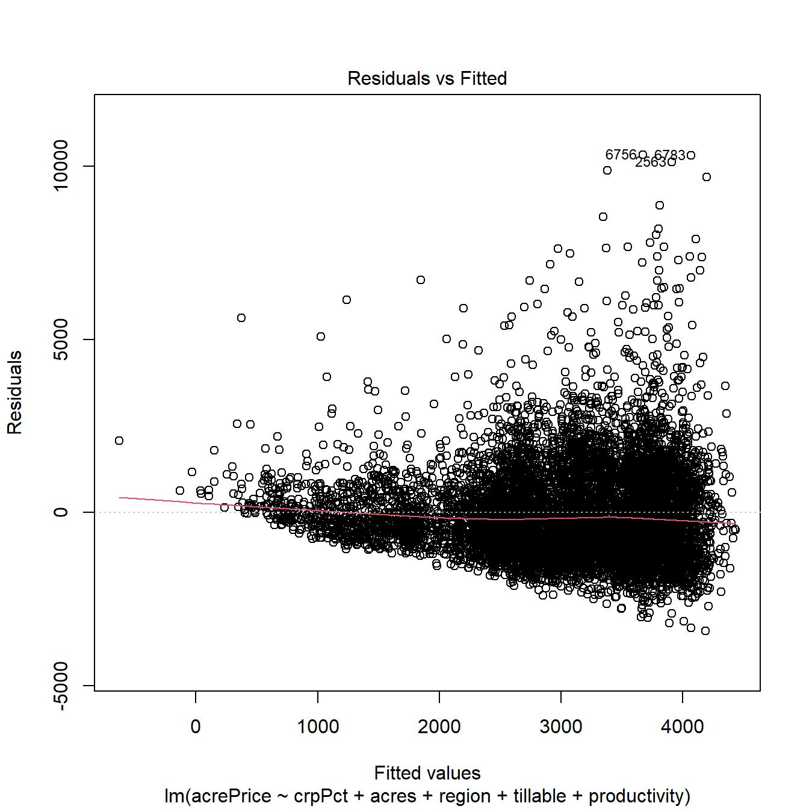
After the log transformation:
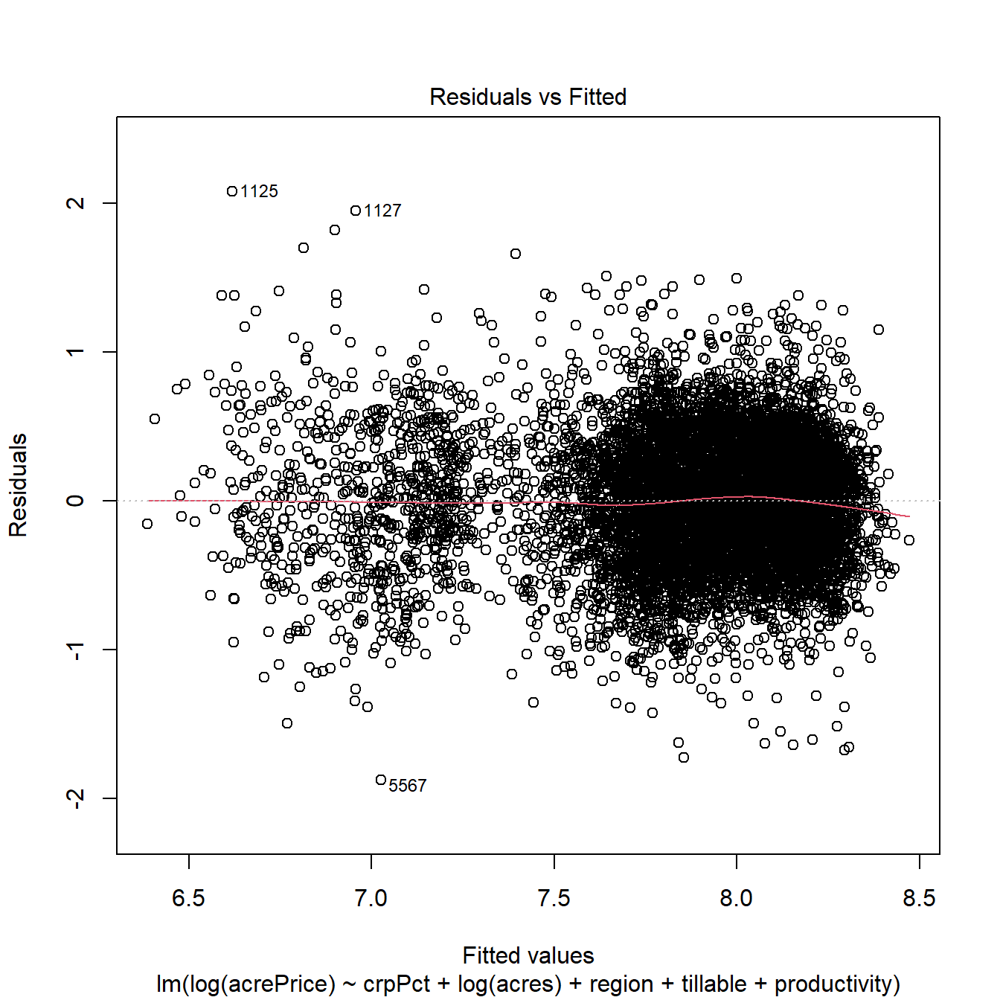
6.1 Results interpretation
| log(acrePrice) | |
|---|---|
| p-values are: '+' p < 0.1, '\*' p < 0.05, '\*\*' p < 0.01, '\*\*\*' p < 0.001. Standard errors are reported in parentheses | |
| (Intercept) | 6.608 (0.042)*** |
| crpPct | -0.003 (0.000)*** |
| log(acres) | -0.069 (0.007)*** |
| regionWest Central | 0.624 (0.018)*** |
| regionCentral | 0.936 (0.021)*** |
| regionSouth West | 0.712 (0.019)*** |
| regionSouth Central | 0.849 (0.020)*** |
| regionSouth East | 0.939 (0.023)*** |
| tillable | 0.003 (0.000)*** |
| productivity | 0.009 (0.000)*** |
| Num.Obs. | 8787 |
| R2 | 0.408 |
| R2 Adj. | 0.408 |
Log transformation requires adjusting the interpretation:
\(\log(y) = \beta \log (x)\) is a log-log transformation
- 1 % (percent) change in \(x\) causes \(\beta\) % (percent) change in \(y\) (AKA Elasticity).
\(\log(y) = \beta x\) is a log-level transformation
- 1 unit change in \(x\) causes \(100 \beta\) % (percent) change in \(y\).
\(y = \beta \log(x)\) is a level-log transformation
- 1 % (percent) change in \(x\) causes \(\beta / 100\) unit in \(y\).
EQ: Interpret selected coefficients and perform statistical hypothesis testing on them.
8. Comparing two models and concluding
| acrePrice | log(acrePrice) | |
|---|---|---|
| p-values are: '+' p < 0.1, '\*' p < 0.05, '\*\*' p < 0.01, '\*\*\*' p < 0.001. Standard errors are reported in parentheses | ||
| (Intercept) | 80.282 (102.349) | 6.608 (0.042)*** |
| crpPct | -6.943 (1.073)*** | -0.003 (0.000)*** |
| acres | -1.290 (0.165)*** | |
| regionWest Central | 995.292 (58.039)*** | 0.624 (0.018)*** |
| regionCentral | 1950.211 (64.543)*** | 0.936 (0.021)*** |
| regionSouth West | 1291.828 (58.343)*** | 0.712 (0.019)*** |
| regionSouth Central | 1747.551 (62.560)*** | 0.849 (0.020)*** |
| regionSouth East | 2040.677 (72.492)*** | 0.939 (0.023)*** |
| tillable | 2.112 (0.969)* | 0.003 (0.000)*** |
| productivity | 23.690 (1.330)*** | 0.009 (0.000)*** |
| log(acres) | -0.069 (0.007)*** | |
| Num.Obs. | 8787 | 8787 |
| R2 | 0.265 | 0.408 |
| R2 Adj. | 0.265 | 0.408 |
Conclude:
EQ: Which model would you choose to explain the effect of crpPct on the price of land?
EQ: Which model best explains the relationship between X and Y?
What is the effect of crpPct on land price?
Which estimated effects are different from your ex-ante hypothesis? Provide a plausible explanation of why are they different?
Example 2. Production function
1. Problem setting
We would like to evaluate the causal effect of the BIMAS production intensification program on the rice output among rice-producing farmers in India.
The outcome variable is:
goutput- gross output of rice in kg per year produced on the farm.
Key variable of interest is:
bimasvariable of interest is an intensification program. Each farmer either participates in it (yes), partially participate (mixed), or does not participate (no).
Other control variables are:
sizethe total area cultivated with rice, measured in hectares;ureaurea application in kilogramphosphatephosphate application in kilogramhiredlaborhired labor in hoursfamlaborfamily labor in hours
2. Regression model
The production function is used to estimate the relationship. We consider two main production functions (see Feng and Horrace 2012):
- Linear production function, when output is a linear combination of all inputs. (Write it down)
\[ \begin{aligned} \operatorname{goutput} &= \alpha + \beta_{1}(\operatorname{size}) + \beta_{2}(\operatorname{bimas}_{\operatorname{yes}})\ + \\ &\quad \beta_{3}(\operatorname{bimas}_{\operatorname{mixed}}) + \beta_{4}(\operatorname{famlabor}) + \beta_{5}(\operatorname{hiredlabor})\ + \\ &\quad \beta_{6}(\operatorname{urea}) + \beta_{7}(\operatorname{phosphate}) + \epsilon \end{aligned} \]
- Cobb-Douglas production function, when the log of output is a linear combination of logged inputs. (Write it down)
\[ \begin{aligned} \operatorname{log(goutput)} &= \alpha + \beta_{1}(\operatorname{\log(size)}) + \beta_{2}(\operatorname{bimas}_{\operatorname{yes}})\ + \\ &\quad \beta_{3}(\operatorname{bimas}_{\operatorname{mixed}}) + \beta_{4}(\operatorname{\log(famlabor)}) + \beta_{5}(\operatorname{\log(hiredlabor)})\ + \\ &\quad \beta_{6}(\operatorname{\log(urea)}) + \beta_{7}(\operatorname{\log(phosphate)}) + \epsilon \end{aligned} \]
2.1 Ex-ante hypotheses about the coefficients
\[ \begin{aligned} \operatorname{goutput} &= \alpha + \beta_{1}(\operatorname{size}) + \beta_{2}(\operatorname{bimas}_{\operatorname{yes}})\ + \\ &\quad \beta_{3}(\operatorname{bimas}_{\operatorname{mixed}}) + \beta_{4}(\operatorname{famlabor}) + \beta_{5}(\operatorname{hiredlabor})\ + \\ &\quad \beta_{6}(\operatorname{urea}) + \beta_{7}(\operatorname{phosphate}) + \epsilon \end{aligned} \]
EQ: Formulate the ex-ante hypotheses about coefficients?
3 Exploratory data analysis
3.1 The data
| goutput | size | bimas | famlabor | hiredlabor | urea | phosphate |
|---|---|---|---|---|---|---|
| 71 | 0.020 | no | 25 | 1 | 5 | 2 |
| 886 | 0.282 | no | 66 | 365 | 30 | 10 |
| 6010 | 2.898 | mixed | 134 | 1878 | 300 | 50 |
| 952 | 0.215 | no | 233 | 60 | 50 | 20 |
| 640 | 0.143 | no | 68 | 56 | 51 | 25 |
| 280 | 0.143 | no | 76 | 42 | 32 | 10 |
| 960 | 0.357 | no | 75 | 305 | 50 | 10 |
| 240 | 0.184 | no | 71 | 40 | 40 | 10 |
| 1830 | 0.575 | yes | 148 | 395 | 165 | 60 |
| 1106 | 0.192 | no | 141 | 39 | 28 | 57 |
| 4400 | 0.857 | mixed | 130 | 1015 | 200 | 50 |
| 436 | 0.143 | mixed | 33 | 98 | 50 | 50 |
| 450 | 0.140 | mixed | 89 | 39 | 25 | 50 |
| 2700 | 0.400 | mixed | 284 | 220 | 150 | 75 |
| 1041 | 0.351 | no | 48 | 160 | 85 | 15 |
3.2 Summary statistics
| N | Mean | SD | Min | Median | Max | Histogram | |
|---|---|---|---|---|---|---|---|
| goutput | 883 | 1449.76 | 1956.91 | 42.00 | 952.00 | 20960.00 | ▇▁ |
| size | 883 | 0.43 | 0.52 | 0.01 | 0.29 | 5.32 | ▇▂ |
| famlabor | 883 | 152.76 | 147.63 | 1.00 | 113.00 | 1526.00 | ▇▂▁ |
| hiredlabor | 883 | 243.47 | 422.93 | 1.00 | 121.00 | 4536.00 | ▇▁ |
| urea | 883 | 99.80 | 128.00 | 1.00 | 65.00 | 1250.00 | ▇▁ |
| phosphate | 883 | 39.19 | 49.17 | 1.00 | 25.00 | 700.00 | ▇▁ |
| bimas | N | % |
|---|---|---|
| no | 661 | 74.9 |
| yes | 84 | 9.5 |
| mixed | 138 | 15.6 |
3.3 What effect BIMAS program have?
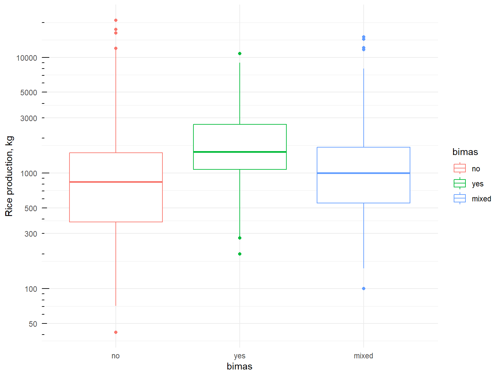
- What kind of plot is this?
- What can we conclude about the differences in rice output by program participation?
- EQ: Does the program participation cause rice output to be different?
3.4 Distributions
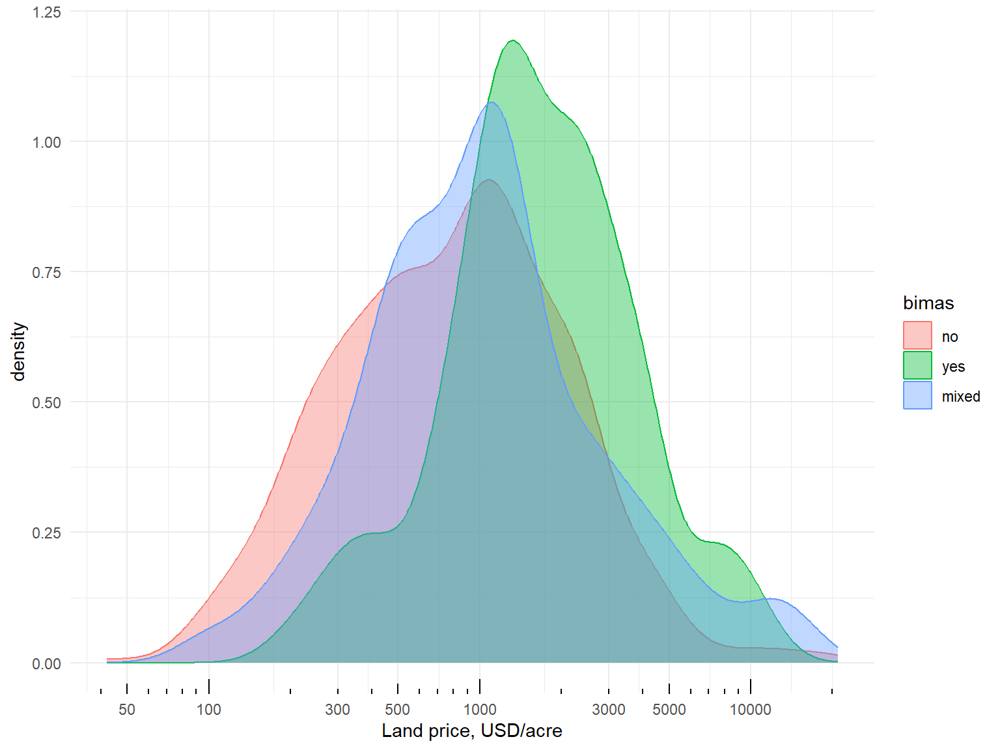
- What kind of plot is this?
- What does it show?
- What differences and similarities does it manifest?
3.5 Scatter plots
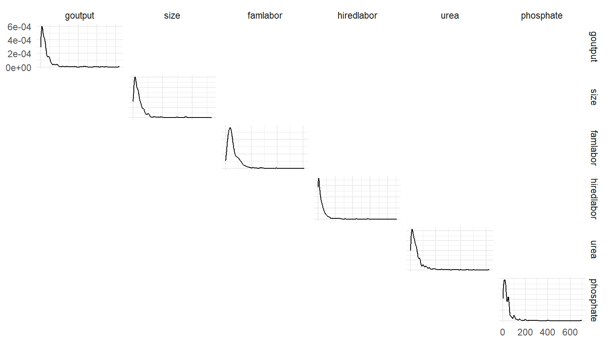
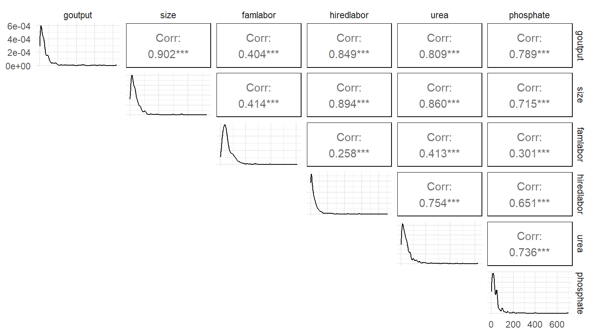
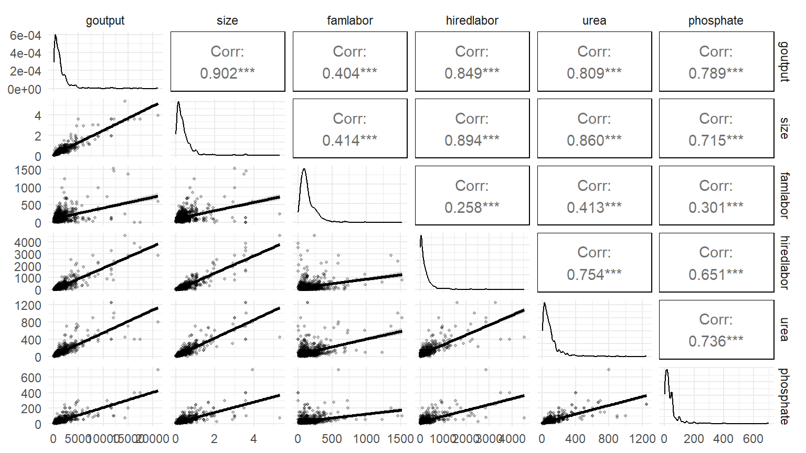
4. Estimating a regression
fit_rice_0 <- lm(
goutput ~ size + bimas + famlabor + hiredlabor + urea + phosphate,
rice_dta_0)
summary(fit_rice_0)
# Coefficients:
# Estimate Std. Error t value Pr(>|t|)
# (Intercept) -107.91531 38.36178 -2.813 0.005017 **
# size 1824.02155 138.40695 13.179 < 2e-16 ***
# bimasyes 157.87341 83.12605 1.899 0.057866 .
# bimasmixed -262.07581 68.13525 -3.846 0.000129 ***
# famlabor 0.78902 0.18633 4.234 2.53e-05 ***
# hiredlabor 1.03722 0.13132 7.898 8.47e-15 ***
# urea -0.03429 0.39242 -0.087 0.930381
# phosphate 11.08610 0.74446 14.891 < 2e-16 ***
#
# Residual standard error: 706.6 on 875 degrees of freedom
# Multiple R-squared: 0.8707, Adjusted R-squared: 0.8696
# F-statistic: 841.5 on 7 and 875 DF, p-value: < 2.2e-166. Interpretation (0)
\[ \begin{aligned} \operatorname{\widehat{goutput}} &= -107.92 + 1824.02(\operatorname{size})\ + \\ &\quad 157.87(\operatorname{bimas}_{\operatorname{yes}}) - 262.08(\operatorname{bimas}_{\operatorname{mixed}})\ + \\ &\quad 0.79(\operatorname{famlabor}) + 1.04(\operatorname{hiredlabor})\ - \\ &\quad 0.03(\operatorname{urea}) + 11.09(\operatorname{phosphate}) \end{aligned} \]
This first regression is in level-level form (without any linear transformation). Thus, interpretations are straightforward:
- 1 unit change in \(x\) causes \(\hat \beta\) unit change in \(y\).
| Linear prod. fun (level-level) | |
|---|---|
| p-values are '+' p < 0.1, '\*' p < 0.05, '\*\*' p < 0.01, '\*\*\*' p < 0.001. Standard errors are reported in parentheses | |
| Dep. var. | Rice output, kg |
| (Intercept) | -107.915 (38.362)** |
| Size, HA | 1824.022 (138.407)*** |
| BIMAS [YES] | 157.873 (83.126)+ |
| BIMAS [MIXED] | -262.076 (68.135)*** |
| Family labor, h | 0.789 (0.186)*** |
| Hired labor, h | 1.037 (0.131)*** |
| Urea, kg | -0.034 (0.392) |
| Phosphate, kg | 11.086 (0.744)*** |
| Num.Obs. | 883 |
| R2 | 0.871 |
| R2 Adj. | 0.870 |
6. Interpretation (1)
size is the total area cultivated with rice, measured in hectares.
An increase in the farm size by 1 hectare, causes on average the gross output of rice to increase by 1824 kg, holding all other factors constant.
The effect of farm size is significant at the 0.1% level of significance (\(H_0\) is rejected based on the p-value, which is p < 0.001 given “***”) suggesting that a positive relationship between the farm size and output is likely to be present in the population.
| Linear prod. fun (level-level) | |
|---|---|
| p-values are '+' p < 0.1, '\*' p < 0.05, '\*\*' p < 0.01, '\*\*\*' p < 0.001. Standard errors are reported in parentheses | |
| Dep. var. | Rice output, kg |
| (Intercept) | -107.915 (38.362)** |
| Size, HA | 1824.022 (138.407)*** |
| BIMAS [YES] | 157.873 (83.126)+ |
| BIMAS [MIXED] | -262.076 (68.135)*** |
| Family labor, h | 0.789 (0.186)*** |
| Hired labor, h | 1.037 (0.131)*** |
| Urea, kg | -0.034 (0.392) |
| Phosphate, kg | 11.086 (0.744)*** |
| Num.Obs. | 883 |
| R2 | 0.871 |
| R2 Adj. | 0.870 |
6. Interpretation (2)
bimas is an intensification program. Each farmer either:
participate in it [YES], or partially participate [MIXED] or do not participate [NO].
Because the dummy variable for [NO] is omitted, it is implied in the intercept.
Variables [YES] and [MIXED] show the effect of different levels of participation compared to NO (non-participation in BIMAS).
- Participating in the BIMAS on a MIXED basis reduces the gross output of rice by 262 kg compared to non-participation given that all other factors remain fixed. The effect is significant at the 5% level of significance.
| Linear prod. fun (level-level) | |
|---|---|
| p-values are '+' p < 0.1, '\*' p < 0.05, '\*\*' p < 0.01, '\*\*\*' p < 0.001. Standard errors are reported in parentheses | |
| Dep. var. | Rice output, kg |
| (Intercept) | -107.915 (38.362)** |
| Size, HA | 1824.022 (138.407)*** |
| BIMAS [YES] | 157.873 (83.126)+ |
| BIMAS [MIXED] | -262.076 (68.135)*** |
| Family labor, h | 0.789 (0.186)*** |
| Hired labor, h | 1.037 (0.131)*** |
| Urea, kg | -0.034 (0.392) |
| Phosphate, kg | 11.086 (0.744)*** |
| Num.Obs. | 883 |
| R2 | 0.871 |
| R2 Adj. | 0.870 |
6. Interpretation (3)
Fully participating in the BIMAS program [YES] yields an estimate of the coefficient of 157.8 implying on average a 158 kg increase in rice production; however, this result is insignificant at the 5% level.
The present functional form fails to reject \(H_0\) about the significant difference of this estimate from zero concluding that such an effect may result from the random variation in the sample, rather than exist in the population.
To further investigate this effect, we might consider modifying the functional form or collecting more data.
| Linear prod. fun (level-level) | |
|---|---|
| p-values are '+' p < 0.1, '\*' p < 0.05, '\*\*' p < 0.01, '\*\*\*' p < 0.001. Standard errors are reported in parentheses | |
| Dep. var. | Rice output, kg |
| (Intercept) | -107.915 (38.362)** |
| Size, HA | 1824.022 (138.407)*** |
| BIMAS [YES] | 157.873 (83.126)+ |
| BIMAS [MIXED] | -262.076 (68.135)*** |
| Family labor, h | 0.789 (0.186)*** |
| Hired labor, h | 1.037 (0.131)*** |
| Urea, kg | -0.034 (0.392) |
| Phosphate, kg | 11.086 (0.744)*** |
| Num.Obs. | 883 |
| R2 | 0.871 |
| R2 Adj. | 0.870 |
6. Interpretation (4) DIY
ureaorphosphateapplication in kilogram;hiredlabororfamlaborin hours;
| Linear prod. fun (level-level) | |
|---|---|
| p-values are '+' p < 0.1, '\*' p < 0.05, '\*\*' p < 0.01, '\*\*\*' p < 0.001. Standard errors are reported in parentheses | |
| Dep. var. | Rice output, kg |
| (Intercept) | -107.915 (38.362)** |
| Size, HA | 1824.022 (138.407)*** |
| BIMAS [YES] | 157.873 (83.126)+ |
| BIMAS [MIXED] | -262.076 (68.135)*** |
| Family labor, h | 0.789 (0.186)*** |
| Hired labor, h | 1.037 (0.131)*** |
| Urea, kg | -0.034 (0.392) |
| Phosphate, kg | 11.086 (0.744)*** |
| Num.Obs. | 883 |
| R2 | 0.871 |
| R2 Adj. | 0.870 |
5. Checking the linearity assumption (1)
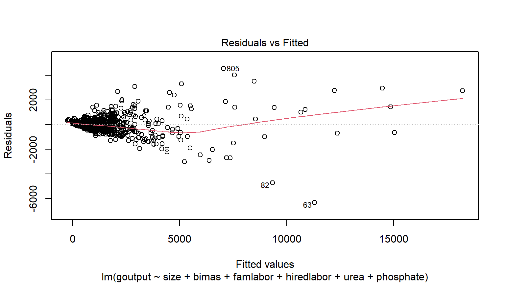
- Clear signs of non-linearity.
4. Model re-specification
Estimating the Cobb-Douglas production function. Note, that \(\log(\cdot)\) stands for a natural logarithm.
\[ \begin{aligned} \operatorname{\widehat{log(goutput)}} &= 5.72 + 0.55(\operatorname{\log(size)}) + 0.12(\operatorname{bimas}_{\operatorname{yes}})\ - \\ &\quad 0.14(\operatorname{bimas}_{\operatorname{mixed}}) + 0.04(\operatorname{\log(famlabor)}) + 0.03(\operatorname{\log(hiredlabor)})\ + \\ &\quad 0.25(\operatorname{\log(urea)}) + 0.13(\operatorname{\log(phosphate)}) \end{aligned} \]
4.1 Comparing regressions
| Linear (level-level) | Cobb-Douglas(log-log) | |
|---|---|---|
| p-values are '+' p < 0.1, '\*' p < 0.05, '\*\*' p < 0.01, '\*\*\*' p < 0.001. Standard errors are reported in parentheses | ||
| Dep. var. | Rice output, kg | log(Rice output, kg) |
| BIMAS [YES] | 157.873 (83.126)+ | 0.118 (0.041)** |
| BIMAS [MIXED] | -262.076 (68.135)*** | -0.142 (0.033)*** |
| Size, HA | 1824.022 (138.407)*** | |
| log(Size, HA) | 0.555 (0.027)*** | |
| Family labor, h | 0.789 (0.186)*** | 0.042 (0.015)** |
| Hired labor, h | 1.037 (0.131)*** | 0.035 (0.011)** |
| Urea, kg | -0.034 (0.392) | 0.247 (0.028)*** |
| Phosphate, kg | 11.086 (0.744)*** | 0.133 (0.021)*** |
| (Intercept) | -107.915 (38.362)** | 5.721 (0.150)*** |
| Num.Obs. | 883 | 883 |
| R2 | 0.871 | 0.878 |
| R2 Adj. | 0.870 | 0.877 |
What has changed?
Has any coefficient changed the sign?
Has any coefficient become significant / insignificant?
How have the goodness of fit measures (GOF) changed?
5. (Again) Checking Linearity
Linear production function
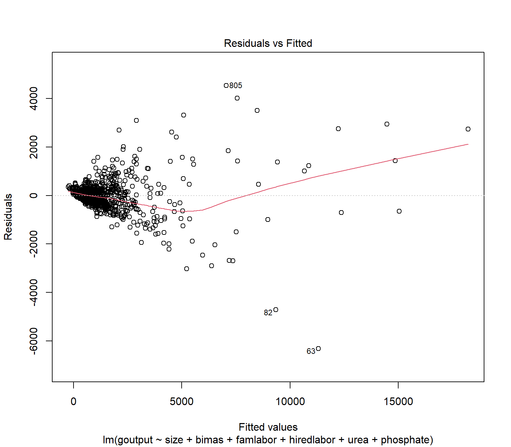
Cobb-Douglas production function
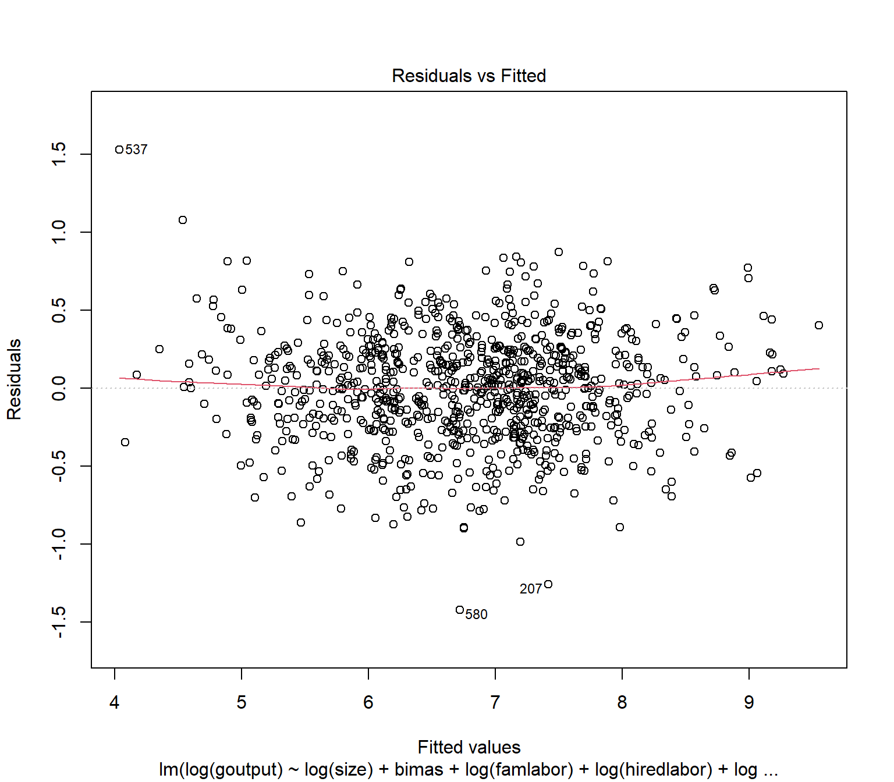
Substantial improvement in linearity.
6. Interpretation with log (0)
This regression is in the log-log transformation for all variables except for the dummy variables, which are in the log-level.
log-log interpretation is straightforward:
- 1 % percent increase in \(x\) causes \(\hat \beta\) % (percent) change in \(y\).
| Cobb-Douglas (log-log) | |
|---|---|
| p-values are '+' p < 0.1, '\*' p < 0.05, '\*\*' p < 0.01, '\*\*\*' p < 0.001. Standard errors are reported in parentheses | |
| Dep. var. | log(Rice output, kg) |
| BIMAS [YES] | 0.118 (0.041)** |
| BIMAS [MIXED] | -0.142 (0.033)*** |
| log(Size, HA) | 0.555 (0.027)*** |
| Family labor, h | 0.042 (0.015)** |
| Hired labor, h | 0.035 (0.011)** |
| Urea, kg | 0.247 (0.028)*** |
| Phosphate, kg | 0.133 (0.021)*** |
| (Intercept) | 5.721 (0.150)*** |
| Num.Obs. | 883 |
| R2 | 0.878 |
| R2 Adj. | 0.877 |
6. Interpretation with log (1)
log-level interpretation of the dummy variables is more complex:
- For the purpose of the exam, please be able to explain weather the dummy variable has a positive or negative effect on \(y\) and if this effect is significant.
For your information and future, please be informed that:
- Change (increase) of a dummy variable \(x\) from 0 to 1 causes \(100 \cdot (e^{\hat\beta} - 1)\) % change in \(y\).
| Cobb-Douglas (log-log) | |
|---|---|
| p-values are '+' p < 0.1, '\*' p < 0.05, '\*\*' p < 0.01, '\*\*\*' p < 0.001. Standard errors are reported in parentheses | |
| Dep. var. | log(Rice output, kg) |
| BIMAS [YES] | 0.118 (0.041)** |
| BIMAS [MIXED] | -0.142 (0.033)*** |
| log(Size, HA) | 0.555 (0.027)*** |
| Family labor, h | 0.042 (0.015)** |
| Hired labor, h | 0.035 (0.011)** |
| Urea, kg | 0.247 (0.028)*** |
| Phosphate, kg | 0.133 (0.021)*** |
| (Intercept) | 5.721 (0.150)*** |
| Num.Obs. | 883 |
| R2 | 0.878 |
| R2 Adj. | 0.877 |
6. Interpretation with log (2)
log(size) the total area cultivated with rice, measured in hectares;
log-logtransformation.Increase of the farm size by 1% is associated with the 0.56% increase in the rice output, given that all other factors remain fixed.
These results are significant at the 5% significance level.
| Cobb-Douglas (log-log) | |
|---|---|
| p-values are '+' p < 0.1, '\*' p < 0.05, '\*\*' p < 0.01, '\*\*\*' p < 0.001. Standard errors are reported in parentheses | |
| Dep. var. | log(Rice output, kg) |
| BIMAS [YES] | 0.118 (0.041)** |
| BIMAS [MIXED] | -0.142 (0.033)*** |
| log(Size, HA) | 0.555 (0.027)*** |
| Family labor, h | 0.042 (0.015)** |
| Hired labor, h | 0.035 (0.011)** |
| Urea, kg | 0.247 (0.028)*** |
| Phosphate, kg | 0.133 (0.021)*** |
| (Intercept) | 5.721 (0.150)*** |
| Num.Obs. | 883 |
| R2 | 0.878 |
| R2 Adj. | 0.877 |
6. Interpretation with log (3)
Participating in the BIMAS on a MIXED basis reduces the gross output of rice by \(100 \cdot e^{-0.142}-1 = - 100 \cdot 0.132 = -13.2\) % (reduces by 13.2%) compared to non-participation given that all other factors remain fixed. The effect is significant at the 5% level of significance.
Participating in the BIMAS on a full basis (yes) basis increases the gross output of rice by: \(100 \cdot e^{0.118}-1 = 100 \cdot 0.125 = 12.5\) % (increases by 12.2%) compared to non-participation given that all other factors remain fixed. The effect is significant at the 5% level of significance.
| Cobb-Douglas (log-log) | |
|---|---|
| p-values are '+' p < 0.1, '\*' p < 0.05, '\*\*' p < 0.01, '\*\*\*' p < 0.001. Standard errors are reported in parentheses | |
| Dep. var. | log(Rice output, kg) |
| BIMAS [YES] | 0.118 (0.041)** |
| BIMAS [MIXED] | -0.142 (0.033)*** |
| log(Size, HA) | 0.555 (0.027)*** |
| Family labor, h | 0.042 (0.015)** |
| Hired labor, h | 0.035 (0.011)** |
| Urea, kg | 0.247 (0.028)*** |
| Phosphate, kg | 0.133 (0.021)*** |
| (Intercept) | 5.721 (0.150)*** |
| Num.Obs. | 883 |
| R2 | 0.878 |
| R2 Adj. | 0.877 |
6. Interpretation with log (4) DIY
ureaorphosphateapplication in kilogram;hiredlabororfamlaborin hours
| Cobb-Douglas (log-log) | |
|---|---|
| p-values are '+' p < 0.1, '\*' p < 0.05, '\*\*' p < 0.01, '\*\*\*' p < 0.001. Standard errors are reported in parentheses | |
| Dep. var. | log(Rice output, kg) |
| BIMAS [YES] | 0.118 (0.041)** |
| BIMAS [MIXED] | -0.142 (0.033)*** |
| log(Size, HA) | 0.555 (0.027)*** |
| Family labor, h | 0.042 (0.015)** |
| Hired labor, h | 0.035 (0.011)** |
| Urea, kg | 0.247 (0.028)*** |
| Phosphate, kg | 0.133 (0.021)*** |
| (Intercept) | 5.721 (0.150)*** |
| Num.Obs. | 883 |
| R2 | 0.878 |
| R2 Adj. | 0.877 |
8. Conclusions
What is the causal effect of BIMAS program on the gross output of rice?
What is the goodness of fit of the model?
EQ: Which model explains the relationship between inputs and outputs more accurately (with less bias)?
EQ: Which model has a higher explanatory power?
| Linear (level-level) | Cobb-Douglas(log-log) | |
|---|---|---|
| p-values are '+' p < 0.1, '\*' p < 0.05, '\*\*' p < 0.01, '\*\*\*' p < 0.001. Standard errors are reported in parentheses | ||
| Dep. var. | Rice output, kg | log(Rice output, kg) |
| BIMAS [YES] | 157.873 (83.126)+ | 0.118 (0.041)** |
| BIMAS [MIXED] | -262.076 (68.135)*** | -0.142 (0.033)*** |
| Size, HA | 1824.022 (138.407)*** | |
| log(Size, HA) | 0.555 (0.027)*** | |
| Family labor, h | 0.789 (0.186)*** | 0.042 (0.015)** |
| Hired labor, h | 1.037 (0.131)*** | 0.035 (0.011)** |
| Urea, kg | -0.034 (0.392) | 0.247 (0.028)*** |
| Phosphate, kg | 11.086 (0.744)*** | 0.133 (0.021)*** |
| (Intercept) | -107.915 (38.362)** | 5.721 (0.150)*** |
| Num.Obs. | 883 | 883 |
| R2 | 0.871 | 0.878 |
| R2 Adj. | 0.870 | 0.877 |
Example 3. Duflo et al. (2008) How High Are Rates of Return to Fertilizer? Evidence from Field Experiments in Kenya
Objective
In (Duflo et al. 2008) authors are trying to estimate the effect of fertilizers application on farms profit.
They employ and randomized controlled trial experiment randomly selecting farmers between children’s parents in certain schools.
On each farm, they demarcate 3 experimental fields and train farmers how to apply certain quantities of fertilizers on these fields. They also supervised the farmers over the growing seasons accurately collected the harvest and measured the outcome each time.
In each trial, random plots (out of the demarcated ones) were selected on each farm for applying different levels of fertilizers.
The authors measured:
- returns as [output value of (treatment - control) - inputs cost] / [inputs cost]
- yields change (treatment - control) / (control) * 100
Results
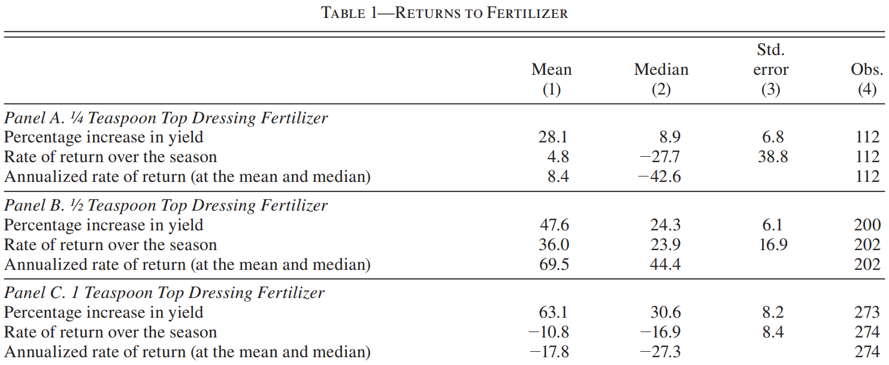
Column (1) reports the mean in returns and yields between control and treatment fields for different rates of fertilizer application overall growing seasons.
What yield change is associated with different levels of fertilizer application?
Can we conclude that fertilizer application improves yields/returns on average in the population?
What rates of fertilizer application improve yields/returns on average in the population?
Is the ceteris paribus ensured in this RCT?
Authors were criticized if the ceteris paribus holds in their experiment
specifically concerning the monetary return levels.
monetary outcomes often depend on many observed and unobserved factors, therefore, they are often seen as “endogenous” in econometrics.
What other factors can affect the return?
How can we ensure that other factors do not affect the return?
Authors solution is the regression analysis
\[ \begin{aligned} \operatorname{Return} &= \beta_0 + \beta_1 \operatorname{Farm size} + \beta_2 \operatorname{Education} + \beta_3 \operatorname{Income} \\ & + \beta_4 \operatorname{Experience in fertilizer use} + \cdots \\ & + \beta_k \operatorname{Other factors} + \epsilon \end{aligned} \]
If other factors affect the return,
What signs/values coefficients \(\beta_\cdot\) should have?
Formulate ex-ante hypotheses about the expected signs of the coefficients.
Checks and balances (1)
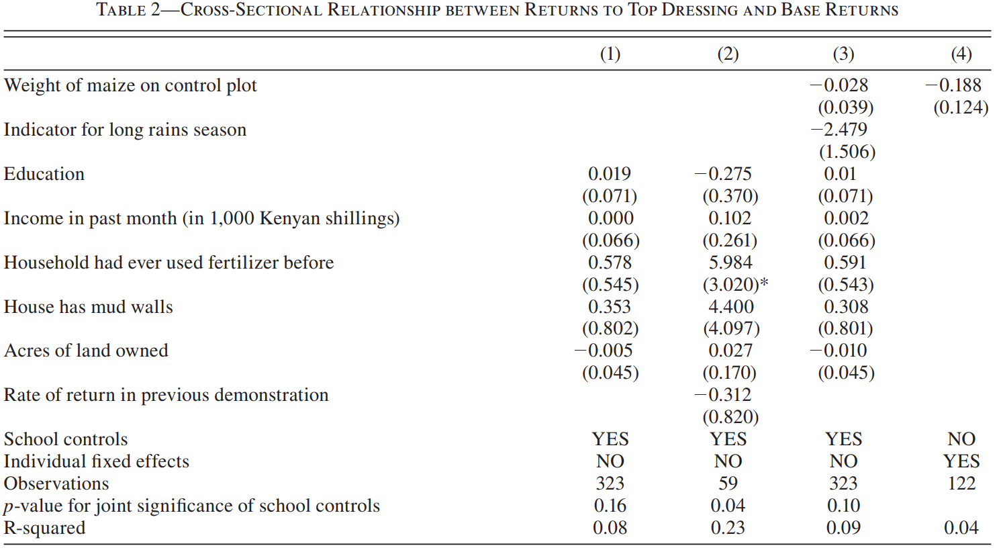
Note: p-values are ‘*’ p < 0.1, ‘**’ p < 0.05, ‘***’ p < 0.01. Standard errors are reported in parentheses.
Checks and balances (2)
Note: p-values are ‘*’ p < 0.1, ‘**’ p < 0.05, ‘***’ p < 0.01. Standard errors are reported in parentheses.
The dependent variable in all regressions is Return %. Only sub-samples are different between the columns.
What effect does education or other factors have on the return?
Has the RCT experiment ensured the ceteris paribus?
What about the GOF? How well do regressions explain variance in return? Is it enough to make any (previous) conclusions?
Regression in Excel
You can use Excel to perform a regression analysis. There are many tutorials online.
See for example: https://youtu.be/9wX1a1J4WOI
References
Duflo, Esther, Michael Kremer, and Jonathan Robinson. 2008. “How High Are Rates of Return to Fertilizer? Evidence from Field Experiments in Kenya.” American Economic Review 98 (2): 482–88. https://doi.org/10.1257/aer.98.2.482.
Feng, Qu, and William C Horrace. 2012. “Alternative Technical Efficiency Measures: Skew, Bias and Scale.” Journal of Applied Econometrics 27 (2): 253–68.
Palmquist, Raymond B. 1989. “Land as a Differentiated Factor of Production: A Hedonic Model and Its Implications for Welfare Measurement.” Land Economics 65 (1): 23. https://doi.org/10.2307/3146260.
Taff, Steven J, and Sanford Weisberg. 2007. “Compensated Short-Term Conservation Restrictions May Reduce Sale Prices.” Appraisal Journal 75 (1).

MK-068-EN (TM) WS2024/25. (c) Eduard Bukin